Fourteen tabs

Planning a trip shouldn’t feel like homework.
Maya: Fourteen tabs. Still no plan.
Sam: Where do we even start?
Camera & transitionSlow dolly toward the sofa; browser tabs accumulate with quiet paper ticks.
Open original PNG18 scenes. Two couples. One trail, in two seasons. The sketchbook becomes a world you can step into.
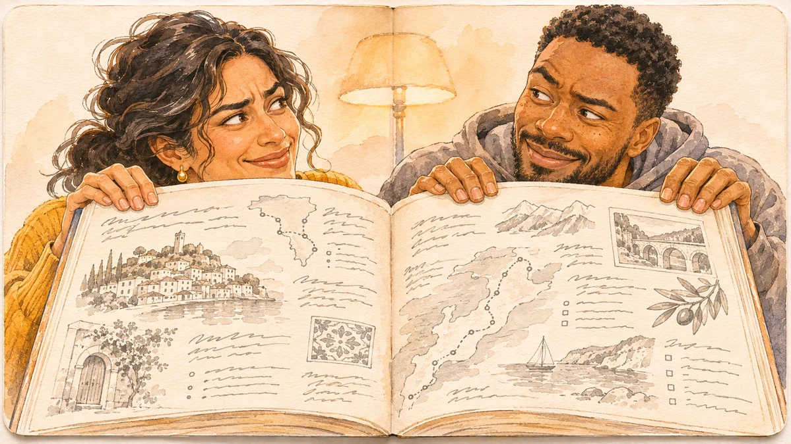
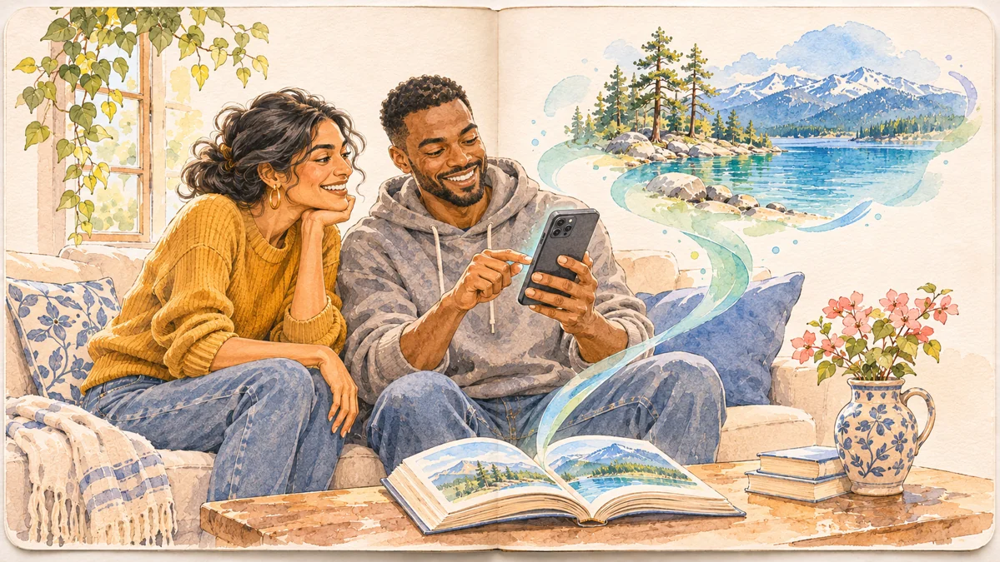
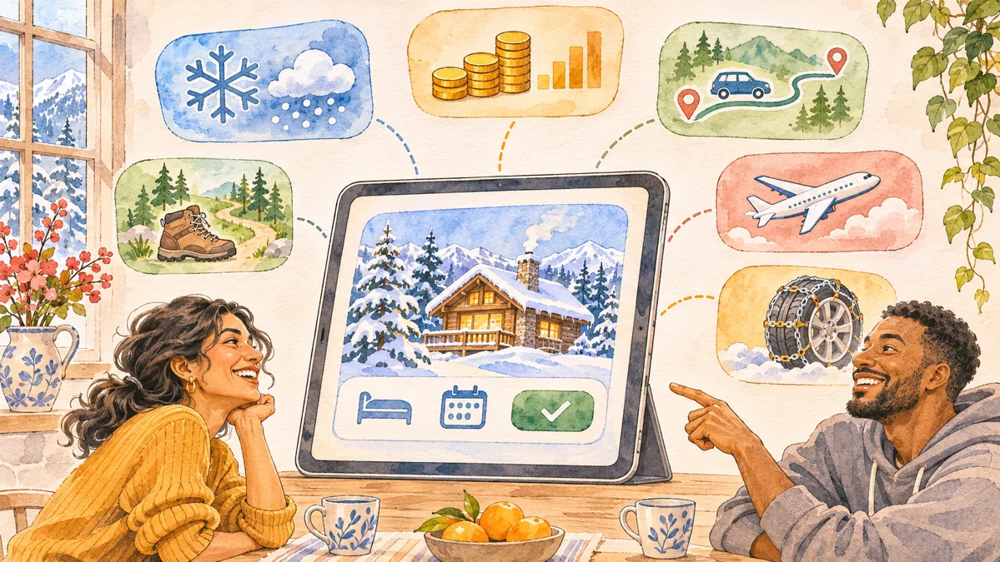
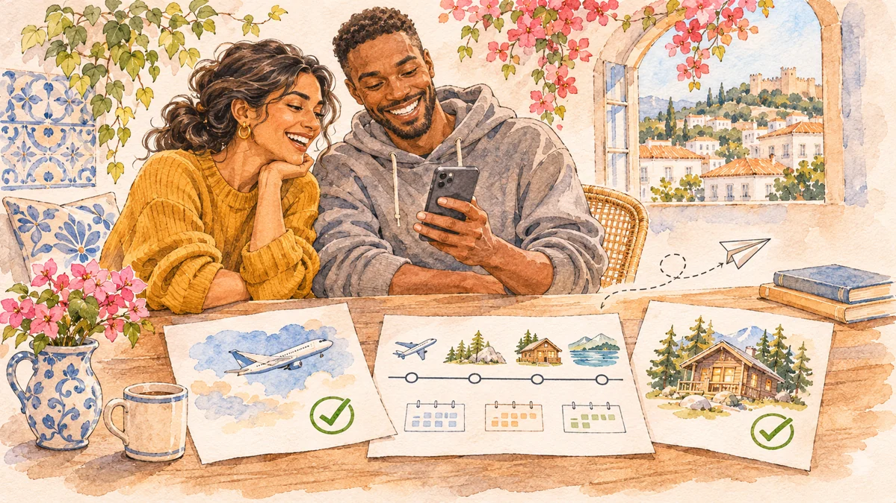
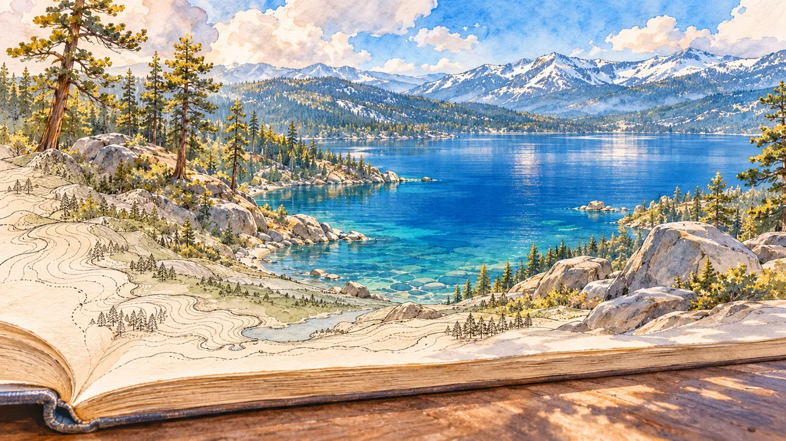
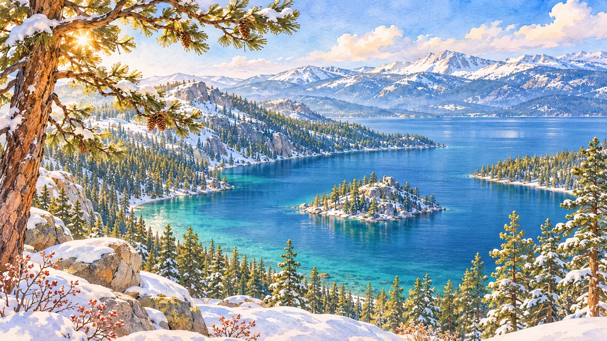


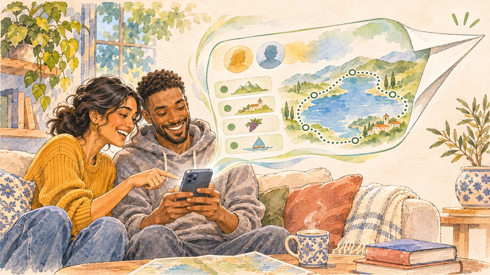
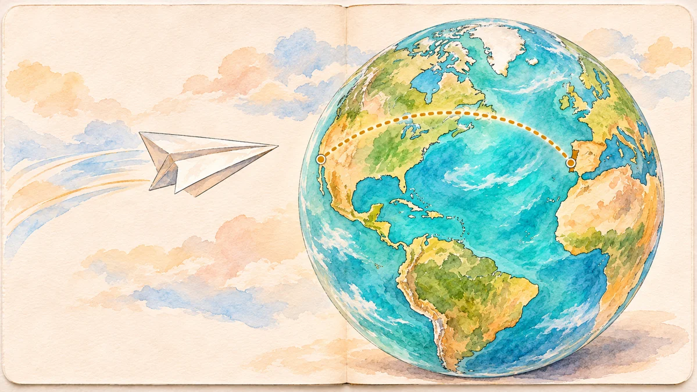

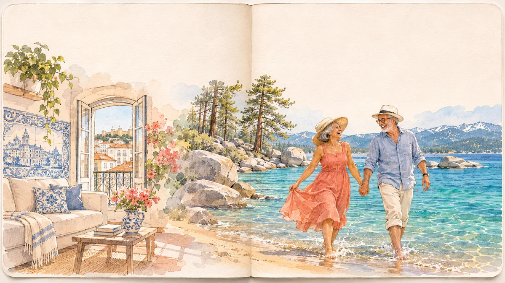
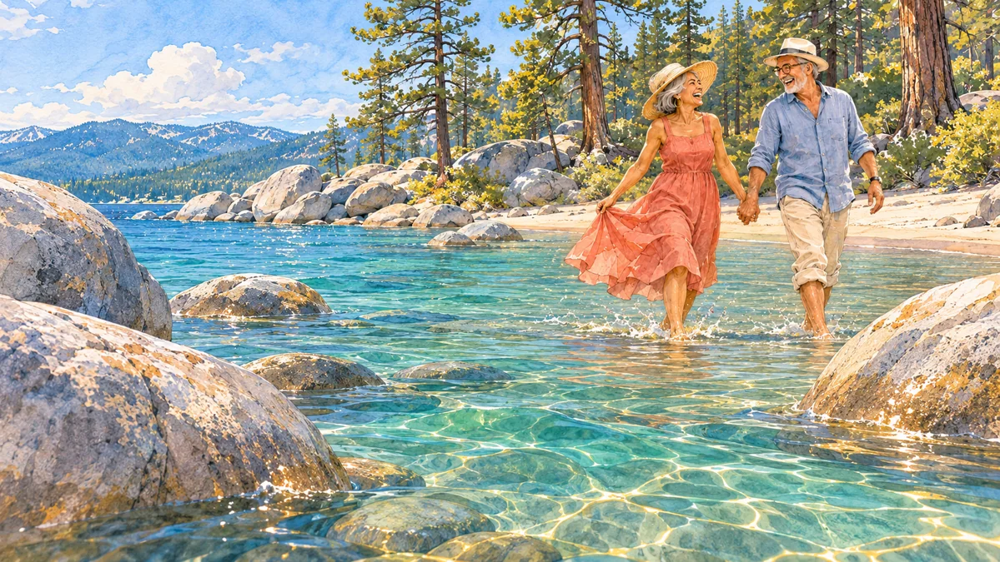

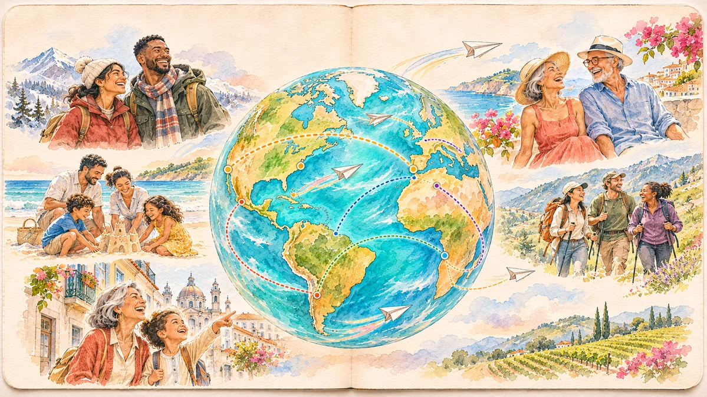
Camera & transition
Scenes 06–08 and 16 are visual targets for immersive 3D camera shots. This review shows generated still keyframes; its timing preview changes frames and is silent. It does not yet render the 3D flythrough or a finished video.
Planning a trip shouldn’t feel like homework.
Maya: Fourteen tabs. Still no plan.
Sam: Where do we even start?
Camera & transitionSlow dolly toward the sofa; browser tabs accumulate with quiet paper ticks.
Open original PNGAll the information. None of the clarity.
Maya: Is this even up to date?
Camera & transitionPush into the guidebook; the type becomes a maze of ink lines.
Open original PNGStart with somewhere you want to go.
Sam: Tahoe?
Maya: Let’s do it.
Camera & transitionFollow Sam’s finger; ink from the book lifts toward the phone.
Open original PNGThe whole decision, in one place.
Maya: Snow chains. Good to know.
Sam: And the whole trip cost.
Camera & transitionCards unfold from the tap, then settle; the map keeps its place.
Open original PNGBook with the partner. Keep the plan together.
Maya: Booked.
Sam: Now the fun part.
Camera & transitionPartner handoff, then a confirmation returns to the shared trip.
Open original PNGAnd then… step inside.
Let the image and sound breathe.
Camera & transitionCamera lowers from overhead to grazing the page; contours lift into actual terrain.
Open original PNGThen go.
Let the image and sound breathe.
Camera & transitionOne unbroken glide over Emerald Bay; descend toward the south shore. Hold the view without UI.
Open original PNG
A place you can almost feel.
Let the image and sound breathe.
Camera & transitionPass between foreground pines; ease to eye height beside the cabin. Snow drifts across the lens.
Open original PNG
The moments are yours.
Maya: Faster, Sam!
Camera & transitionA sled passes close; match-cut to the same two silhouettes at a sunset pier.
Open original PNG
Bring home more than photos.
Maya: Look at this one.
Sam: Best trip ever.
Camera & transitionMatch-cut the sunset photo to the phone back on the sofa.
Open original PNGShare the plan. Choose what stays private.
Maya: Someone should have this.
Sam: Leave a trail.
Camera & transitionRoute stays crisp; personal details dissolve; the plan folds into a paper plane.
Open original PNGA good trip can start another.
Let the image and sound breathe.
Camera & transitionFollow the paper plane; the globe rotates from the US west coast toward Portugal.
Open original PNGHalf a world away…
Rosa: Tomás, look at this.
Tomás: A trail?
Camera & transitionGlobe lands on Lisbon; a quiet phone vibration answers the paper-plane sound.
Open original PNG
Follow the trail. Make it yours.
Rosa: Summer at the lake?
Tomás: This is perfect.
Camera & transitionWinter trip changes to summer; contextual cards appear around their phone.
Open original PNGSame trail. Their summer.
Rosa: Your shoes, Tomás!
Tomás: Cold! Perfect.
Camera & transitionThe room washes into Sand Harbor, keeping their eyeline continuous.
Open original PNGThe same place. A whole new feeling.
Let the image and sound breathe.
Camera & transitionMatch the winter camera line, now glide low past Sand Harbor boulders; land at water height.
Open original PNG
Every trail starts with someone.
Rosa: Obrigada.
Camera & transitionPull back from their lake to the globe; trails draw outward and continue beyond the frame.
Open original PNGTake a trip. Leave a trail.
Let the image and sound breathe.
Camera & transitionThe world settles; the tagline and one clear invitation remain.
Open original PNGThese are existing renders from the project’s Three.js world, not the newly generated artwork above. Terrain, water, trees, a cabin, the pier and a moving camera already exist. Matching the watercolor direction and adding the summer look remain video-production work.
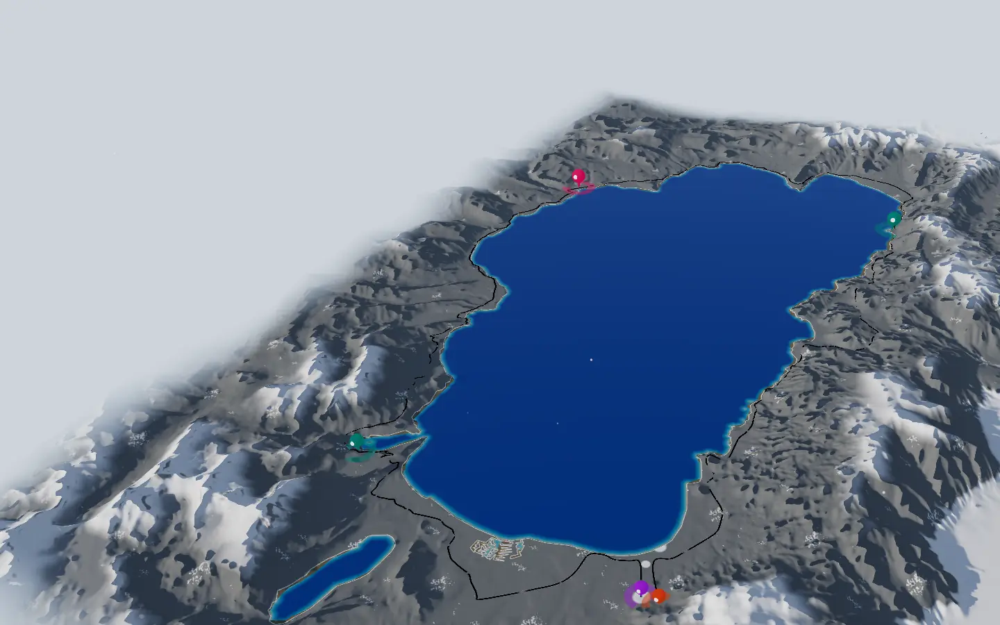
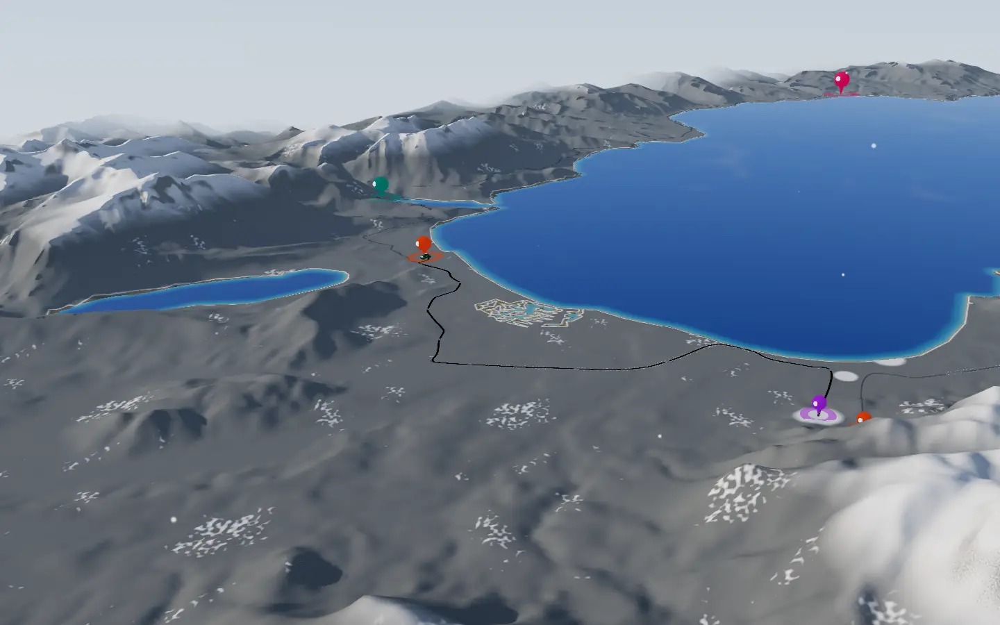
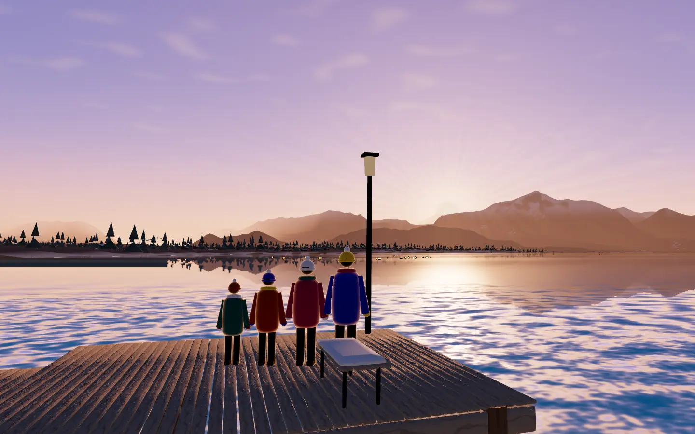
87-second landscape master, with a separate portrait reframe. Narration and character dialogue are alternative copy tracks at this stage: choose the character-led or narrator-led cut before recording, rather than trying to fit both into every short shot.
Sound starts with paper, tabs and a room tone. At scene 06 the page rustle opens into wind, water and distant birds; leave scene 07 almost wordless. Cabin snow and the sled lead to warm room tone. The paper plane carries us to Lisbon. At scene 16, water returns in summer; a restrained musical lift carries the final globe and invitation.
Use the existing 3D terrain and camera for continuous spatial movement. Image generation supplied the art targets; it did not generate moving video. No generative-video tool is connected in this session. A rendered MP4 combining the artwork, compositing and 3D camera work is the available production route.